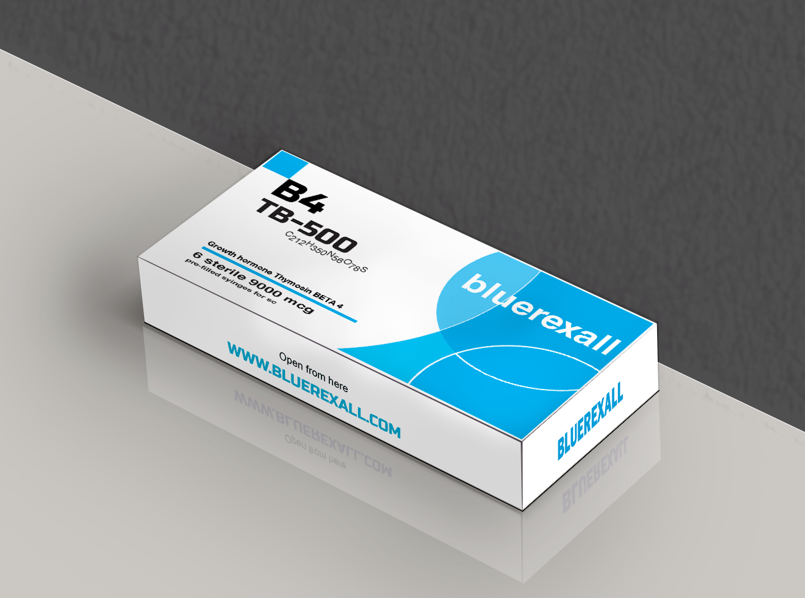
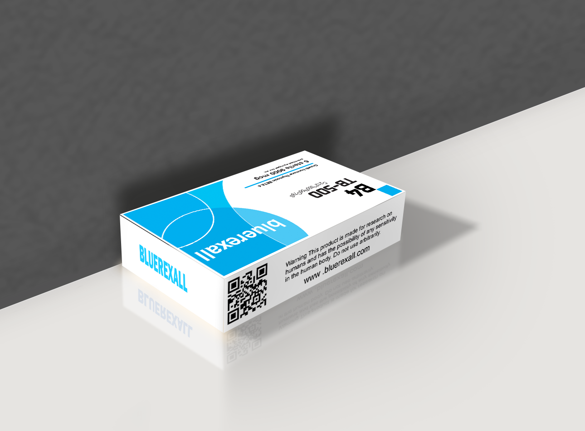

Research Use Only - Biotechnology Peptide


TB-500 (Thymosin Beta-4 fragment) is a synthetic peptide that has been widely studied in scientific research focused on cellular repair mechanisms and tissue regeneration processes. It is derived from a naturally occurring protein involved in actin regulation, which plays a key role in cell structure and movement.
In laboratory studies, TB-500 has been investigated for its potential involvement in promoting cell migration, angiogenesis, and the modulation of inflammatory responses. These properties make it a subject of interest in research related to wound healing and regenerative biology.
Researchers also explore TB-500 for its possible role in enhancing recovery processes in muscle and connective tissues under controlled experimental conditions. Its effects are studied at the molecular level to better understand how cells respond to injury and repair signals.
It is important to emphasize that TB-500 is strictly intended for research and laboratory use only. It is not approved for human consumption, medical treatment, or therapeutic applications outside of controlled scientific environments.
Overall, TB-500 remains a valuable compound in biomedical research due to its association with cellular regeneration pathways and its potential to help scientists better understand tissue repair mechanisms.